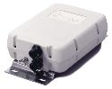
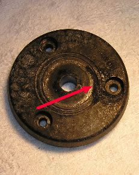
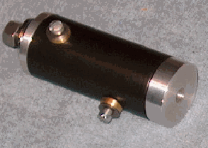

Basics
There seems to be as much confusion about internal couplers as there are external ones. Auto-couplers built into modern transceivers are only good for mismatched loads up to approximately 3:1 SWR. Therefore, they're only suitable for extending the bandwidth of a monoband mobile antenna — and even this is a questionable practice. Using one in conjunction with a screwdriver antenna isn't recommended, due to the high RF voltage problem described below. Yet many mobile operators choose their transceiver make and model just because it has a built-in auto-coupler.
The confusion extends to external auto-couplers too. The usual justification is to flatten the SWR to near zero — which they don't always do. While this does slightly reduce coax losses, there is little thought about the additional losses within the coupler itself. In fact, the losses through the auto-coupler are usually several times more than a 2:1 SWR would cause through coax.
When auto-couplers are used in a mobile environment driving electrically short antennas, the resulting RF output voltage can exceed 10 kV, even when running just 100 watts PEP. This is a serious concern. Standard ballmounts and nylon washers are not designed to handle this much electromotive stress. They will fail post-haste, especially if moisture is present.


High RF voltage isn't the only concern. Since we're dealing with high reactances, auto-couplers must be mounted as close to the antenna as possible — that means inches, not feet. You cannot use coax between the auto-coupler and the antenna. Even a one-foot piece of coax will reduce efficiency by 30%. The reason: coax has about 25 pF of capacitance per foot. The capacitance of a typical HF antenna ranges from 20 pF to about 45 pF depending on its length and frequency. Since the auto-coupled antenna is essentially a base-loaded vertical, placing 25 pF to ground shunts a large portion of the RF to ground. This interaction should not be confused with using shunt reactances to match a low-impedance HF antenna to 50 ohms — that is a different situation entirely.

The robustness of the RF ground is also a major consideration. Classic symptoms of poor RF grounding are when the coupler cannot find a match or resets itself during transmissions. One-inch braid may work if the ground lead is short (less than six inches or so). The ground side impedance must be lower than the radiating element side impedance — this is not optional.
Auto-couplers are decade-switched LC networks with a design limitation: they cannot adequately match loads close to the feed line's impedance (near 50 ohms resistive). If the radiator represents a 1/4-wave vertical at the operating frequency, the auto-coupler may not be able to present a low impedance to the transceiver. The typical symptom is that the coupler appears to tune properly at low power, but once full power is applied it attempts to retune. Knowing the problem exists is half the cure.
The most popular auto-couplers for driving an unloaded whip are the Icom AH-4, the Yaesu FT-40, the Alinco EDX-2, and various MFJ models. Internally, the switching arrangement is almost identical across these units.

It should be noted that the line of auto-couplers manufactured by LDG Electronics are not single-ended — they are made to match coax-fed loads. While suitable for extending the bandwidth of a monoband antenna, they do not have the matching range of the single-ended couplers mentioned above. A 4:1 balun is available intended to extend the matching range, but the losses through this single-core ratio balun are very high.
Efficiencies
The efficiency of an auto-coupler/whip combination isn't all it could be. They are roughly equivalent to a base-loaded antenna, which already has the worst possible coil position for radiation resistance. However, there are ways to increase their efficiency.
Obviously, increasing the overall length by using a mast is one option, but height limitations apply. A good alternative is a cap hat, but this raises additional concerns. In order to be effective, the cap hat must be mounted at the very top of the antenna. This is difficult to accomplish when using a whip made from 17-7 stainless steel — they're too flexible at the heights required. A solid mast is the only answer.
Aluminum rod is fairly inexpensive and available from Commerce Metals, Speedy Metals, Metals Depot, and similar suppliers. It requires drilling and tapping, but any good metal shop can do that for you. A good rod size to target is 5 feet in length and 5/8-inch OD. Add a 5-foot cap hat (as described in the Cap Hat article), and the electrically equivalent length will be nearly 12 feet. This more than doubles the overall efficiency of the auto-coupler/whip combination.
One more consideration: the mounting arrangement. A 5-foot aluminum rod with a cap hat on top represents significant wind loading and bending moment. The mounting solution depends on a lot of variables — the vehicle and the mounting position are the two largest. These issues, however, should be weighed against more than doubling the overall efficiency.
If you're using an auto-coupler system and are frustrated by its inability to tune certain bands, the most common causes are: (1) the coupler is mounted too far from the antenna with coax in between; (2) the ground lead is too long or too high in impedance; (3) the antenna is at or near 1/4 wave on the operating frequency, putting the load impedance in the auto-coupler's matching dead zone; or (4) moisture in the mounting hardware is causing arc-over rather than a clean impedance transformation.
Modern Considerations
Auto-couplers have not fundamentally changed since this material was originally written. The physics is the same. However, some points are worth emphasizing for modern installations:
Built-in transceiver tuners: More transceivers now ship with built-in auto-couplers as standard equipment rather than options. The Kenwood TS-480SAT versus TS-480HX example from the original article has been replaced by similar options from Icom, Yaesu, and others. The decision to choose a radio based on its built-in tuner should account for the tuner's actual matching range (typically 3:1 SWR or less) and the reality that using the built-in tuner with a screwdriver antenna is not recommended for the reasons described above.
Voltage rating of modern mounts: Manufacturer literature on antenna mounting hardware rarely mentions RF voltage ratings. Most ballmounts, spring bases, and quick disconnects are not designed for the kilovolt-level RF that an auto-coupler driving a short antenna will produce. If you choose an auto-coupler installation, budget for proper high-voltage-rated base insulators. The Breedlove insulator mentioned above is a good choice; verify its voltage rating before purchase.
Common mode aggravation: Auto-coupler installations tend to have worse common mode current problems than properly matched screwdriver antenna installations. The reason is the high impedances involved and the typically poor RF ground of auto-coupler installations. Common mode chokes are not optional — they are mandatory, and the choke impedance required may be considerably higher than for a standard installation. Use Mix 31 ferrite and measure the result; a single choke may not be sufficient.
Aluminum-body vehicles: The RF ground requirements for an auto-coupler installation (ground side impedance lower than the radiating element side) are more demanding than for a loaded antenna with a shunt coil match. On an aluminum-body vehicle with non-conductive panels, achieving an adequate RF ground for an auto-coupler installation may not be possible from some locations. Evaluate this carefully before committing to an auto-coupler approach on an aluminum-body truck or vehicle with composite body panels.